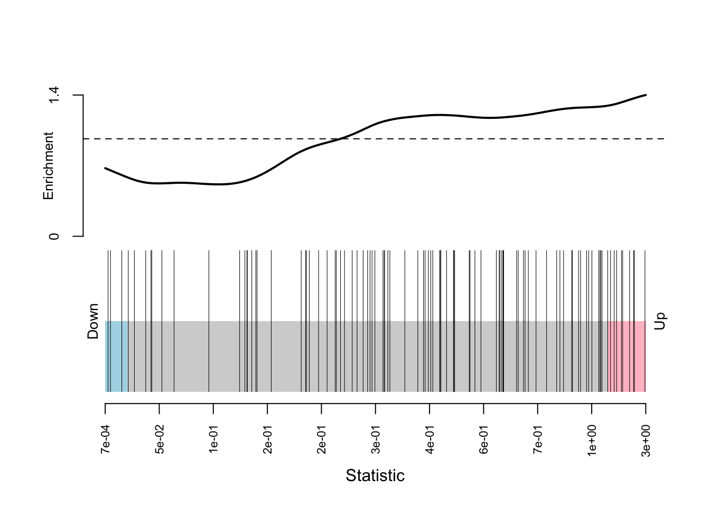
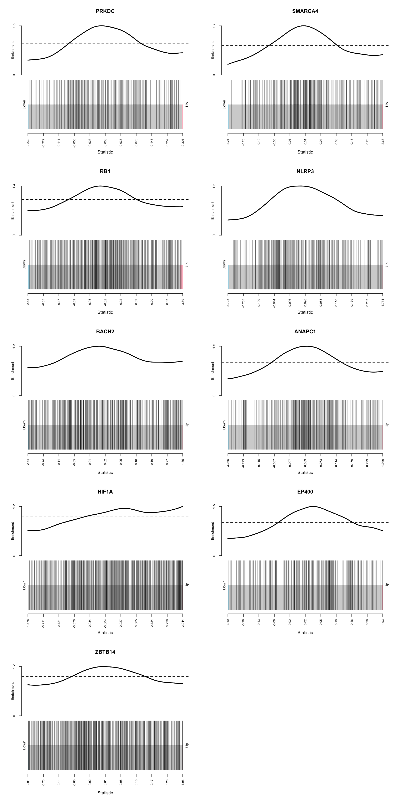
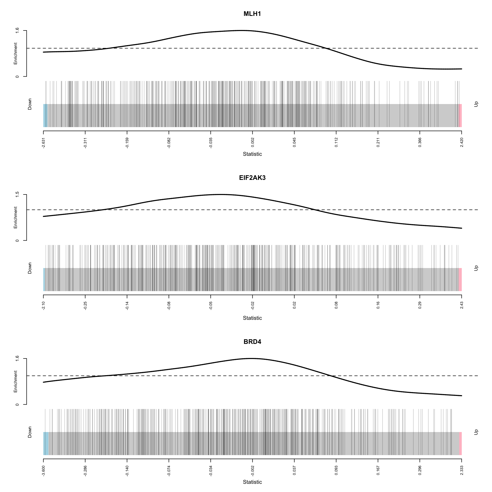
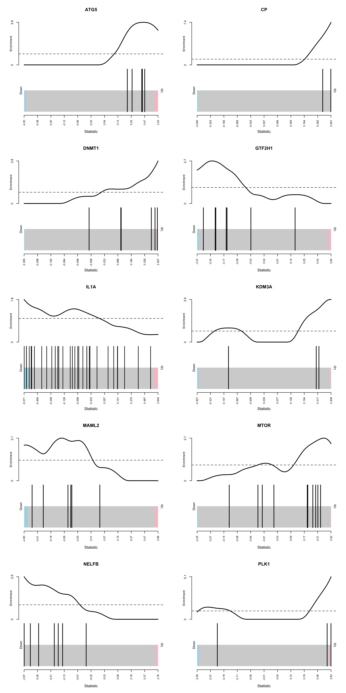
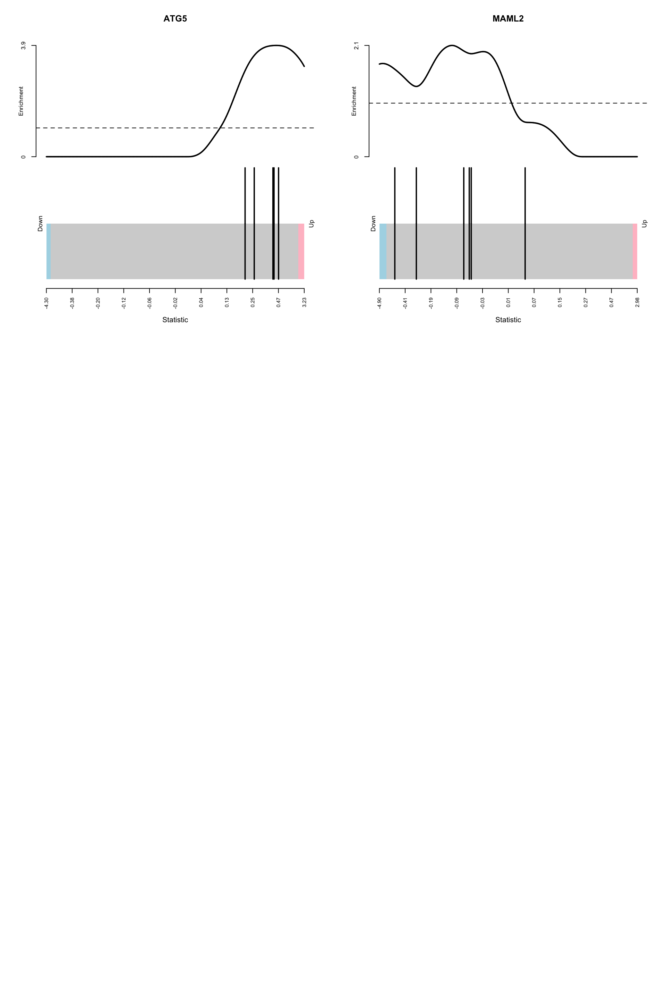
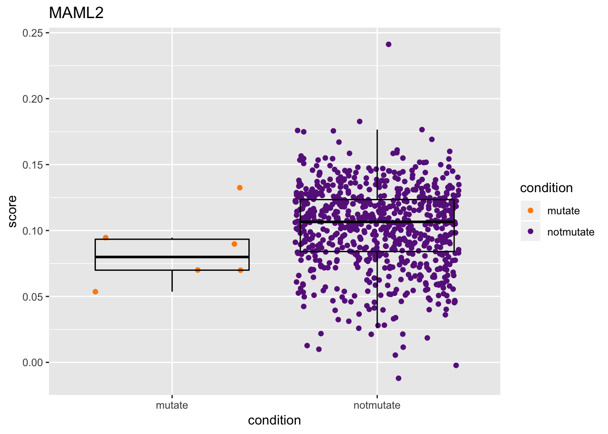

Last updated: 2018-07-30
workflowr checks: (Click a bullet for more information) ✔ R Markdown file: up-to-date
Great! Since the R Markdown file has been committed to the Git repository, you know the exact version of the code that produced these results.
✔ Environment: empty
Great job! The global environment was empty. Objects defined in the global environment can affect the analysis in your R Markdown file in unknown ways. For reproduciblity it’s best to always run the code in an empty environment.
✔ Seed:
set.seed(20180723)
The command set.seed(20180723) was run prior to running the code in the R Markdown file. Setting a seed ensures that any results that rely on randomness, e.g. subsampling or permutations, are reproducible.
✔ Session information: recorded
Great job! Recording the operating system, R version, and package versions is critical for reproducibility.
✔ Repository version: a5ba0c8
wflow_publish or wflow_git_commit). workflowr only checks the R Markdown file, but you know if there are other scripts or data files that it depends on. Below is the status of the Git repository when the results were generated:
Ignored files:
Ignored: .DS_Store
Ignored: .Rproj.user/
Ignored: analysis/.DS_Store
| File | Version | Author | Date | Message |
|---|---|---|---|---|
| Rmd | a5ba0c8 | bingrus | 2018-07-30 | wflow_publish(“analysis/first-analysis.Rmd”) |
| html | 313567e | bingrus | 2018-07-30 | Build site. |
| Rmd | 9887a50 | bingrus | 2018-07-30 | wflow_publish(“analysis/first-analysis.Rmd”) |
| html | 7572251 | bingrus | 2018-07-30 | Build site. |
| Rmd | 71f6536 | bingrus | 2018-07-30 | wflow_publish(“analysis/first-analysis.Rmd”) |
| html | 6024512 | bingrus | 2018-07-30 | Build site. |
| Rmd | e99321e | bingrus | 2018-07-30 | wflow_publish(“analysis/first-analysis.Rmd”) |
| html | efe1198 | bingrus | 2018-07-23 | Build site. |
| Rmd | d892c83 | bingrus | 2018-07-23 | slight code change |
| html | 672115e | bingrus | 2018-07-23 | Build site. |
| Rmd | e7fe6d5 | bingrus | 2018-07-23 | change vector index |
| html | 264b8f9 | bingrus | 2018-07-23 | Build site. |
| Rmd | ace61b7 | bingrus | 2018-07-23 | Add my first analysis |
| html | 66baded | bingrus | 2018-07-23 | Build site. |
| Rmd | 8c86f0a | bingrus | 2018-07-23 | Add my first analysis |

| Version | Author | Date |
|---|---|---|
| 66baded | bingrus | 2018-07-23 |
Down Up UpOrDown Mixed
PRKDC 0.9674837 0.0330165083 0.066 0.001
SMARCA4 0.9904952 0.0100050025 0.020 0.001
RB1 0.9649825 0.0355177589 0.071 0.001
NLRP3 0.9759880 0.0245122561 0.049 0.025
BACH2 0.9939970 0.0065032516 0.013 0.026
ANAPC1 0.9599800 0.0405202601 0.081 0.001
HIF1A 1.0000000 0.0005002501 0.001 0.065
EP400 0.9774887 0.0230115058 0.046 0.015
ZBTB14 0.9844922 0.0160080040 0.032 0.067 Down Up UpOrDown Mixed
MLH1 0.01550775 0.9849925 0.031 0.010
EIF2AK3 0.04002001 0.9604802 0.080 0.063
BRD4 0.01350675 0.9869935 0.027 0.039*colored by logFC cut-off of -1 and 1 
*colored by logFC cut-off of -1 and 1 
Observing the barcodeplots, I did not find significant trend in the logFC for the selected genes. Therefore, I turn to use a competitive gene set test.
NGenes Direction PValue
ANAPC15 2 Up 0.02449023
ARAF 1 Up 0.04346663
ATG5 5 Up 0.02413876
BMF 2 Down 0.01208212
BMP7 4 Up 0.03998398
CA9 7 Up 0.01147036
CAMP 2 Up 0.02382208
CGA 1 Up 0.008135968
COPS5 2 Down 0.02470864
CP 2 Up 0.0002104548
CRY2 2 Up 0.01020165
CYP27B1 3 Up 0.0005495688
DHCR24 2 Up 0.005023424
DLC1 1 Up 0.02606838
DNMT1 6 Up 0.001270264
EIF2S1 2 Down 0.001051003
EXOSC5 1 Up 0.0337712
FGF8 10 Up 0.0009936227
GNAI1 1 Up 0.01833056
GNRHR 1 Up 0.04484628
GTF2H1 7 Down 0.01623092
GTF2H4 7 Down 0.04924274
HDAC5 1 Down 0.04443173
HDAC8 1 Up 0.03740693
HIPK1 1 Up 0.009928304
HIST1H2BC 3 Up 0.03898411
HIST1H2BM 3 Up 0.0228639
HPX 1 Down 0.01628562
IL1A 32 Down 0.02361948
KCNMB1 1 Down 0.04105646
KDM3A 3 Up 0.02627117
KIT 1 Up 0.0058206
LDB1 1 Down 0.03954431
MAML2 6 Down 0.0331873
MAP2K1 11 Up 0.02417861
MTOR 10 Up 0.0487507
NELFB 7 Down 0.01589462
NR2C1 1 Up 0.001375224
PDCD5 1 Up 0.02852119
PIN1 3 Up 0.0005917278
PLCG1 1 Up 0.04921961
PLK1 3 Up 0.03498213
POLR2G 10 Down 0.03300064
POLR2J 10 Up 0.04194447
PPP2R2A 1 Down 0.005569465
PRDX4 11 Down 0.02706672
RUVBL1 4 Up 0.01876242
S1PR3 1 Down 0.04910259
SESN2 1 Down 0.03656895
SHH 14 Up 0.04306852
SLC39A8 1 Up 0.0002381013
SLC3A2 1 Down 0.01938222
TADA2B 3 Down 0.03290973
TRPV6 1 Up 0.04061363
UBE3A 1 Up 0.0139555*selected regulators that have at least 1 target and 5 mutated cell lines

| Version | Author | Date |
|---|---|---|
| 6024512 | bingrus | 2018-07-30 |

| Version | Author | Date |
|---|---|---|
| 6024512 | bingrus | 2018-07-30 |

| Version | Author | Date |
|---|---|---|
| 6024512 | bingrus | 2018-07-30 |
| Version | Author | Date |
|---|---|---|
| 6024512 | bingrus | 2018-07-30 |
gene.score gene.cl primary.site title
GSM887005 0.09459600 mutate endometrium EN
GSM887067 0.07003154 mutate endometrium HEC-108
GSM887075 0.05359688 mutate endometrium HEC-6
GSM887161 0.13246922 mutate stomach IM95
GSM887399 0.06988642 mutate lung NCI-H2066
GSM887645 0.08979526 mutate large_intestine SNU-C4 gene.score gene.cl primary.site title
GSM886988 0.1554603 mutate prostate DU 145
GSM887001 0.1133585 mutate ovary EFO-27
GSM887161 0.1617418 mutate stomach IM95
GSM887271 0.1145288 mutate prostate LNCaP clone FGC
GSM887602 0.1743522 mutate large_intestine SNU-1040
GSM887608 0.2601871 mutate ovary SNU-119sessionInfo()R version 3.5.0 (2018-04-23)
Platform: x86_64-apple-darwin15.6.0 (64-bit)
Running under: macOS High Sierra 10.13.4
Matrix products: default
BLAS: /Library/Frameworks/R.framework/Versions/3.5/Resources/lib/libRblas.0.dylib
LAPACK: /Library/Frameworks/R.framework/Versions/3.5/Resources/lib/libRlapack.dylib
locale:
[1] en_AU.UTF-8/en_AU.UTF-8/en_AU.UTF-8/C/en_AU.UTF-8/en_AU.UTF-8
attached base packages:
[1] grid parallel stats4 stats graphics grDevices utils
[8] datasets methods base
other attached packages:
[1] bindrcpp_0.2.2 ggplot2_3.0.0 GEOquery_2.48.0
[4] annotate_1.58.0 XML_3.98-1.11 org.Hs.eg.db_3.6.0
[7] AnnotationDbi_1.42.1 IRanges_2.14.10 S4Vectors_0.18.3
[10] Biobase_2.40.0 BiocGenerics_0.26.0 limma_3.36.2
loaded via a namespace (and not attached):
[1] tidyselect_0.2.4 purrr_0.2.5 colorspace_1.3-2
[4] htmltools_0.3.6 yaml_2.1.19 blob_1.1.1
[7] rlang_0.2.1 R.oo_1.22.0 pillar_1.2.3
[10] withr_2.1.2 glue_1.2.0 DBI_1.0.0
[13] R.utils_2.6.0 bit64_0.9-7 plyr_1.8.4
[16] bindr_0.1.1 stringr_1.3.1 munsell_0.5.0
[19] gtable_0.2.0 workflowr_1.1.1 R.methodsS3_1.7.1
[22] memoise_1.1.0 evaluate_0.10.1 labeling_0.3
[25] knitr_1.20 Rcpp_0.12.17 xtable_1.8-2
[28] readr_1.1.1 backports_1.1.2 scales_0.5.0
[31] bit_1.1-14 hms_0.4.2 digest_0.6.15
[34] stringi_1.2.3 dplyr_0.7.6 rprojroot_1.3-2
[37] tools_3.5.0 bitops_1.0-6 magrittr_1.5
[40] lazyeval_0.2.1 RCurl_1.95-4.10 RSQLite_2.1.1
[43] tibble_1.4.2 whisker_0.3-2 tidyr_0.8.1
[46] pkgconfig_2.0.1 xml2_1.2.0 assertthat_0.2.0
[49] rmarkdown_1.10 R6_2.2.2 git2r_0.22.1
[52] compiler_3.5.0 This reproducible R Markdown analysis was created with workflowr 1.1.1